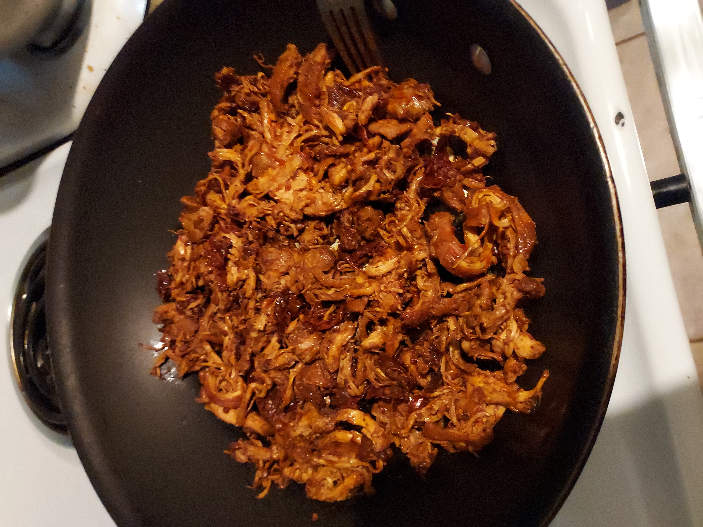

chicken tacos

chicken tacos
Tender and spicy chicken tacos, cooked in adobo, chipotle peppers and topped with lemon. Serve with toppings of choice.
ingredients
- boneless/deboned chicken thighs
- chipotle peppers
- adobo
- garlic
- salt
- cumin
- paprika
- smoked paprika
- lemon
- chili powder
- olive oil
- corn tortillas
steps for tortillas
- place corn tortilla(s) into hot pan over medium high heat
- once heated to desired temp, remove tortilla and set aside
- repeat steps 1-2 until you reach to desired amount of heated tortillas
steps for chicken
- place chicken thighs inside a bowl
- lightly coat the chicken with olive oil
- season the chicken generously with chili powder, cumin, paprika, and smoked paprika
- let the marinate sit for at least 20 minutes (if the marinate is left for more than 20 minutes ensure it is put in a refrigerated area)
- thinly dice fresh garlic
- pour a thin layer of olive oil in a hot pan over medium high heat
- place chicken skin side down in the hot pan
- season chicken generously with salt
- leave chicken on medium high heat for approximately 6 minutes each side or until evenly cooked
- poor abodo and chipotle peppers over cooked chicken
- turn down to medium low heat
- shred chicken in the adobo (if shredding in pan, ensure the pan is non-stick and avoid using metal utensils to avoid scrapping off non-stick coating into food)
- squeeze 1 lemon over shredded chicken and use the juice to deglaze the pan
- chicken is ready to serve